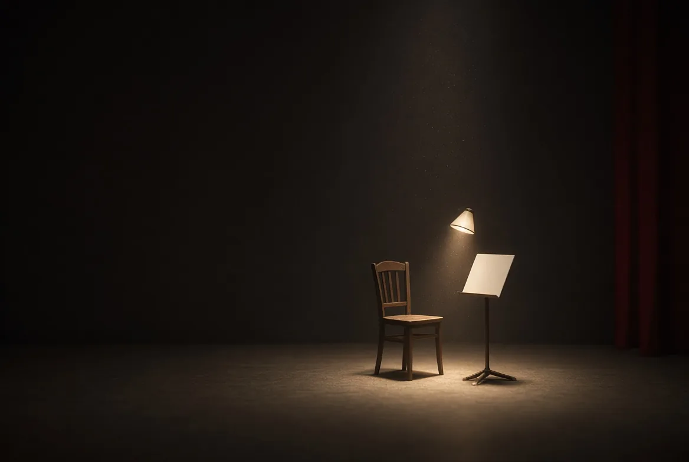
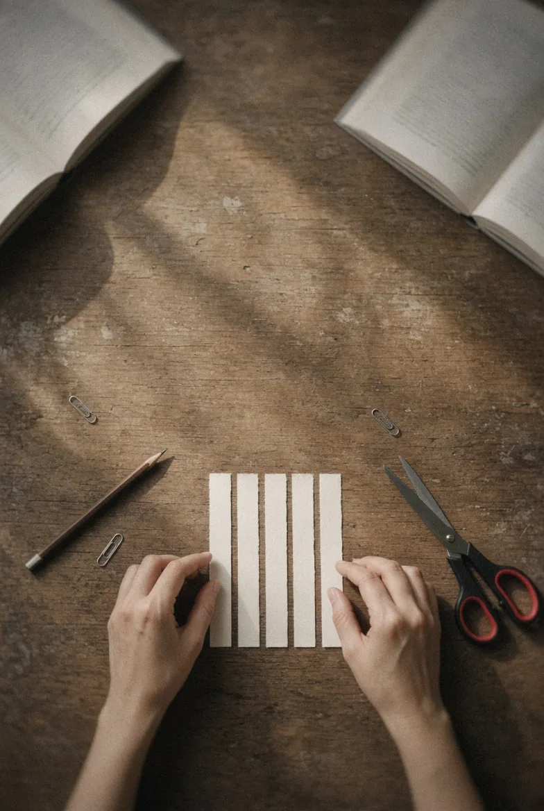
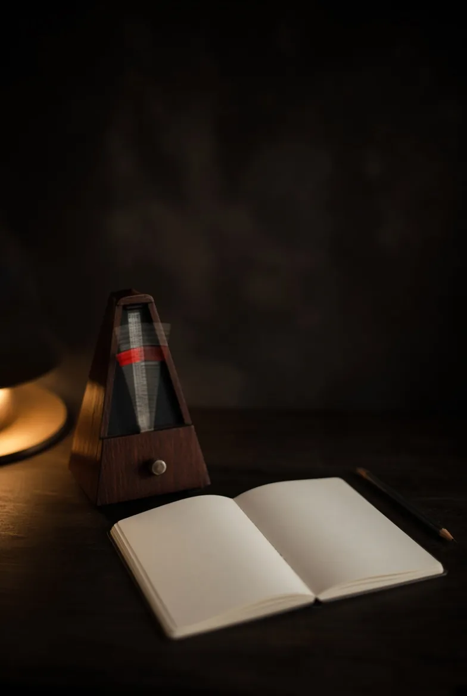
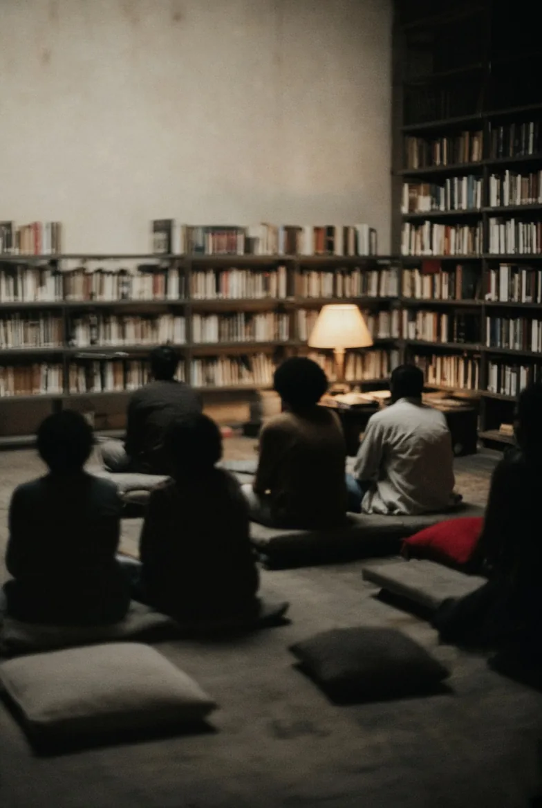
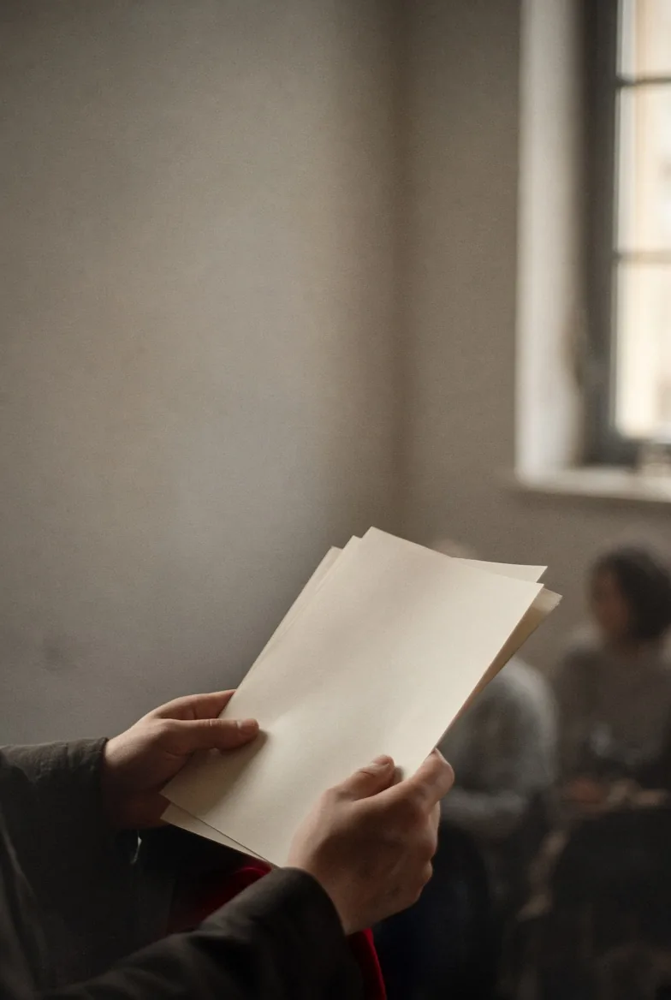

Choisir et assembler les textes
(Des livres, une carte, des pages à relier.)
(Une scène vide. Une chaise, un pupitre, une lampe.)


(Portrait d’Élise Truchard à fournir)
Formée au théâtre et à la mise en scène à Paris VIII et Paris X, Élise Truchard travaille comme comédienne avant de devenir assistante à la mise en scène de Julie Brochen. Son parcours la conduit à travailler auprès de Valère Novarina, Joël Jouanneau, Claude Buchvald ou Gabriel Garran.
Depuis une dizaine d’années, la littérature et la lecture à voix haute occupent une place centrale dans son travail. Pendant sept ans, elle participe aux Mille lectures d’hiver, dispositif porté par Ciclic Centre-Val de Loire, et développe de nombreux projets avec des bibliothèques, des établissements scolaires et des lieux culturels, patrimoniaux, sociaux ou de soin.
La lecture à voix haute est un travail artistique à part entière.
Choisir et assembler les textes, construire une dramaturgie, travailler le rythme, la voix, l’adresse et les conditions d’écoute, pour faire entendre une écriture.
(Des livres, une carte, des pages à relier.)

(Un début, un milieu, une fin, pour des textes qui n’étaient pas faits pour se suivre.)

(Les silences comptent autant que les mots.)
(Une voix, et ce qui la porte.)

(À qui parle-t-on ? À une œuvre, à une salle, à une personne.)

(Assis sur des coussins, à la lumière d’une lampe.)
(La compagnie en quatre dates.)
Élise Truchard et Ale créent la Compagnie Petite Nature. Le travail se fait à la croisée de l’art et de la science : Vite, plus vite que la lumière, Le Temps du monde fini, Les Molécules désaccordées, La Théorie du nuage, écrits et mis en scène à deux, avec Élise comme interprète.
Les recherches prennent des formes différentes. Élise Truchard adapte et met en scène Faire un feu, d’après Jack London. Ale développe des projets d’art numérique : Haïkus numériques, Bienvenue à la maison.
La lecture à voix haute devient centrale : sept ans aux Mille lectures d’hiver de Ciclic, et des projets avec des bibliothèques, des écoles, des lieux de soin et de patrimoine.
Ale poursuit son travail au sein de la Compagnie Haïkus Numériques (haikusnumeriques.fr). La Compagnie Petite Nature se consacre aux projets littéraires portés par Élise Truchard : lectures à voix haute et labos littéraires.

Des lectures à voix haute, en tournée, en immersion ou sur mesure, et des labos littéraires, où la littérature devient une expérience collective avec les participants.
Médiathèque, établissement scolaire, musée, festival, lieu de soin ou entreprise : décrivez votre projet en quatre étapes pour préparer une proposition avec la compagnie.